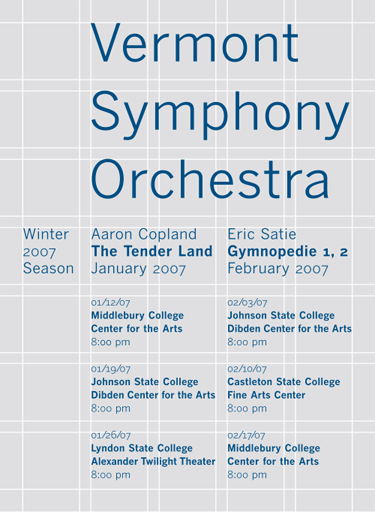

A typographic grid is a two-dimensional structure made up of a series of intersecting vertical and horizontal axes used to structure content. The grid serves as an armature on which a designer can organize text and images in a rational, easy to absorb manner.
The less common printing term “reference grid,” is an unrelated system with roots in the early days of printing.
After World War II, a number of graphic designers, including Max Bill, Emil Ruder, and Josef Müller-Brockmann, influenced by the modernist ideas of Jan Tschichold's Die neue Typographie (The New Typography), began to question the relevance of the conventional page layout of the time. They began to devise a flexible system able to help designers achieve coherency in organizing the page. The result was the modern typographic grid that became associated with the International Typographic Style. The seminal work on the subject, Grid systems in graphic design by Müller-Brockmann, helped propagate the use of the grid, first in Europe, and later in North America.
While grid systems have seen significant use in print media, interest from web developers has only recently seen a resurgence. Website design frameworks producing HTML and CSS had existed for a while before newer frameworks popularised the use of grid-based layouts. Some examples of grid system frameworks are:
This page was last modified on 23 August 2012 at 02:02.
Text is available under the Creative Commons Attribution-ShareAlike License; additional terms may apply. See Terms of use for details.
Wikipedia® is a registered trademark of the Wikimedia Foundation, Inc., a non-profit organization.